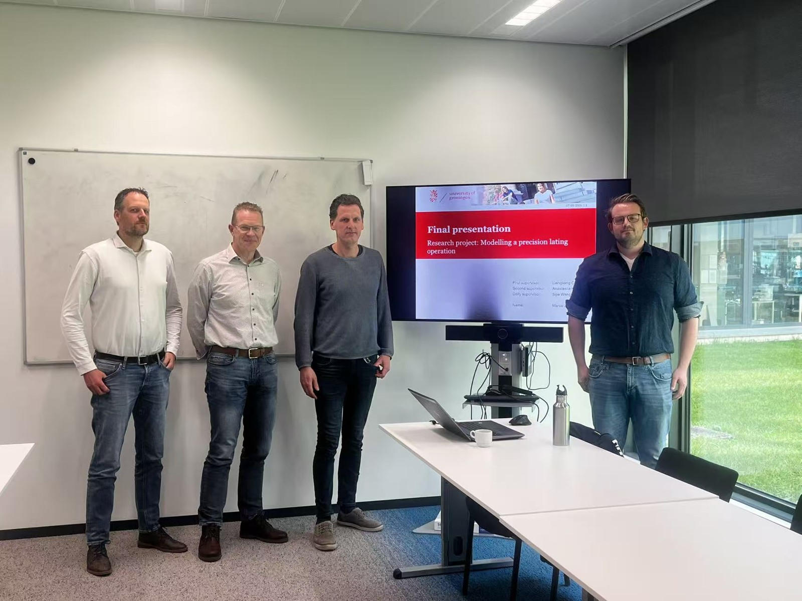

June 2026
Marco Zekveld had his final presentation on his master research project in NDT&SHM group
This project explored how input-output dynamic mode decomposition (ID-DMD) can be used to support data-driven optimisation of lathing settings in contact lens manufacturing. By learning the dynamic relationship between processing conditions and manufacturing outcomes, the work contributes to more efficient, accurate, and intelligent process optimisation for precision manufacturing applications.
We sincerely thank our industrial collaborator Ger Folkersma, Remco Poelarends, and Johan de Wit from Demcon for their strong support, valuable input, and close collaboration throughout this project. Their industrial expertise and engagement played an important role in connecting the research with practical manufacturing challenges.
Congratulations again to Marco Zekveld on this excellent achievement!
